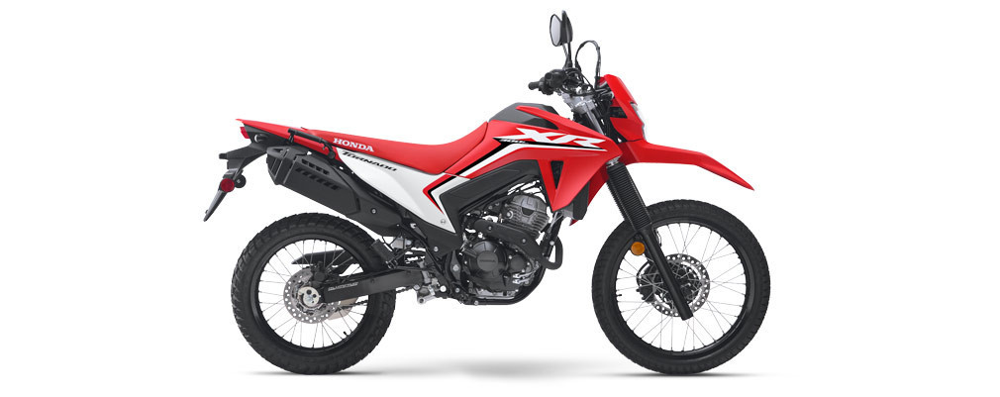

Es una moto dual‑sport (on/off) moderna y versátil, ideal tanto para el uso urbano como para aventuras fuera de camino, conservando un ADN trail clásico.
La Tornado 300 es una trail auténtica, desarrollada para quienes buscan una moto ligera, potente y segura para el día a día y la aventura. Con inyección electrónica, embrague moderno, ABS y una ergonomía pensada para largas distancias, ofrece una combinación excelente entre rendimiento y versatilidad.